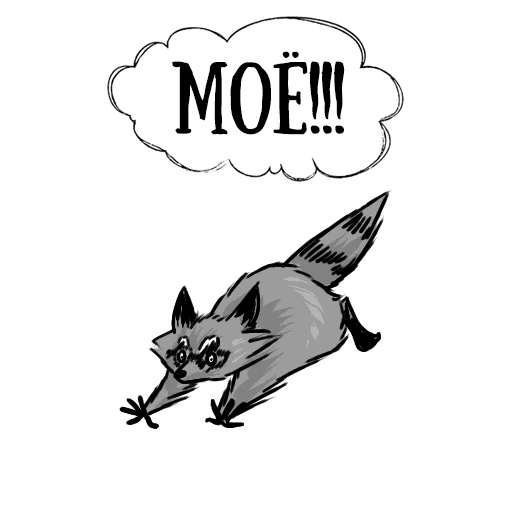
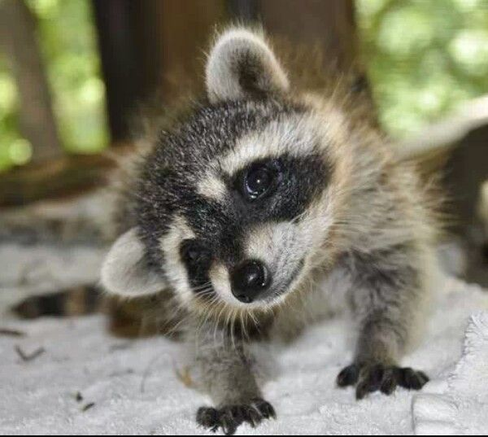
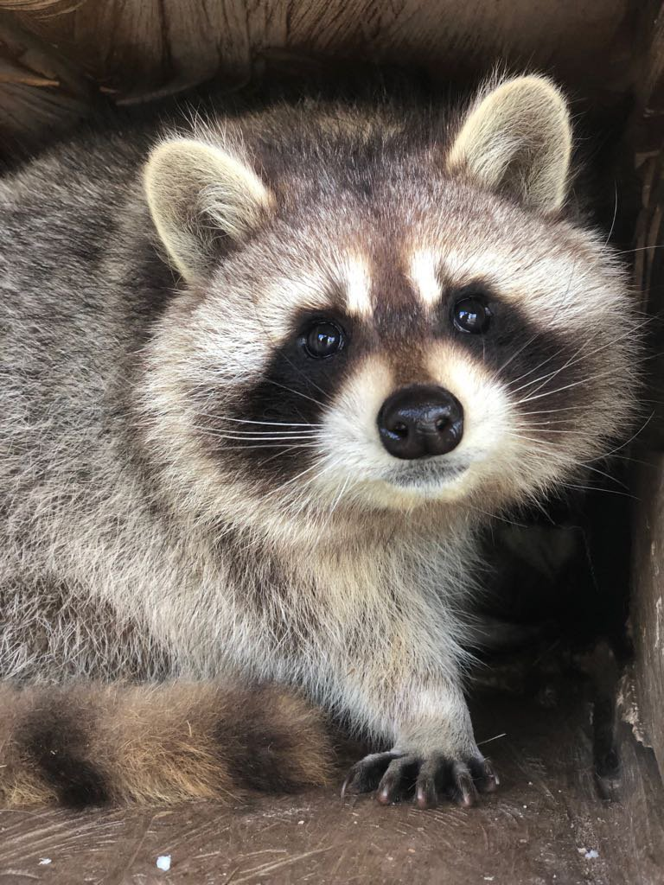

Милые, пушистые твари заполонили весь интернет! Остерегайтесь! Крушат все - винду, антивирус. Жрут провода, сожрут всю вашу еду, пока вы сладко спите! Да, да прямо через интеренет! Особо опасные особи, такие как полоскуны прополоскают ваш сотовый телефон и ноутбук!

Жители города Янгстаун, что в американском штате Огайо, жалуются в полицию на енотов. Они, утверждают местные жители, стали вести себя, как зомби. В частности, животные, которые, как известно, ведут ночной образ жизни, вдруг стали появляться в городе днем.
Во Владивостоке кошка приютила новорожденных енотов, которых бросила их мать.
По их словам, кошка ветеринара зоопарка покормила и вылизала брошенных енотов, как родных.

7 апреля в зверинце появилось на свет сразу семь маленьких енотиков-полоскунов. Такое количество детенышей весьма редко для енотов даже в дикой природе.

Товарищи учителя-заказчики, как можно новости в 250 символов уложить вообще???